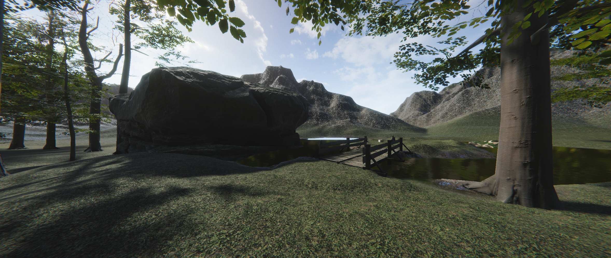

VR Find
Redirected Walking and Reaching in small spaces
- VR
- Unity
- C#
+ Worked in a team to investigate how redirection can be combined with other locomotion techniques
+ Implemented the RDW with fixed-point teleportation pipeline
+ Created three realistic haptic props
+ Performed formal user testing and evaluation